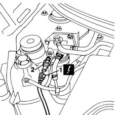

1044D20 thermal switch for fuel heater - r + r
- Path
- Procedures > 10 ENGINE UNIT > 1044 FUEL CIRCUIT PUMP/S AND DEVICES > 1044D fuel heating device > 1044D20 thermal switch for fuel heater - r + r
- Kind
- repair procedure (removal / refitting; the operation number is the code)
- Applies to
- engines: 1.9 JTD 8V; all production periods
- Interactive page
- https://sloeber94.github.io/elrnDB-fMltpl/en/#/2891388
Applies to: engines: 1.9 JTD 8V; all production periods
 Removing
Removing
 Refitting
RefittingOpen the bonnet lid.
Disconnect the battery negative (-) terminal.
1. Disconnect the electrical connection from the thermal switch for the fuel heater.
 | Name | Connector |
|---|---|---|
1 | Diesel heater resistance | O20A |
2. Unscrew the switch from the fuel filter and remove.

Applies to: engines: 1.9 JTD 8V; all production periods
Refitting
RemovingFit the thermal switch to the fuel heater.
Connect the electrical connection.
Connect the negative (-) battery terminal.
Close the bonnet lid.